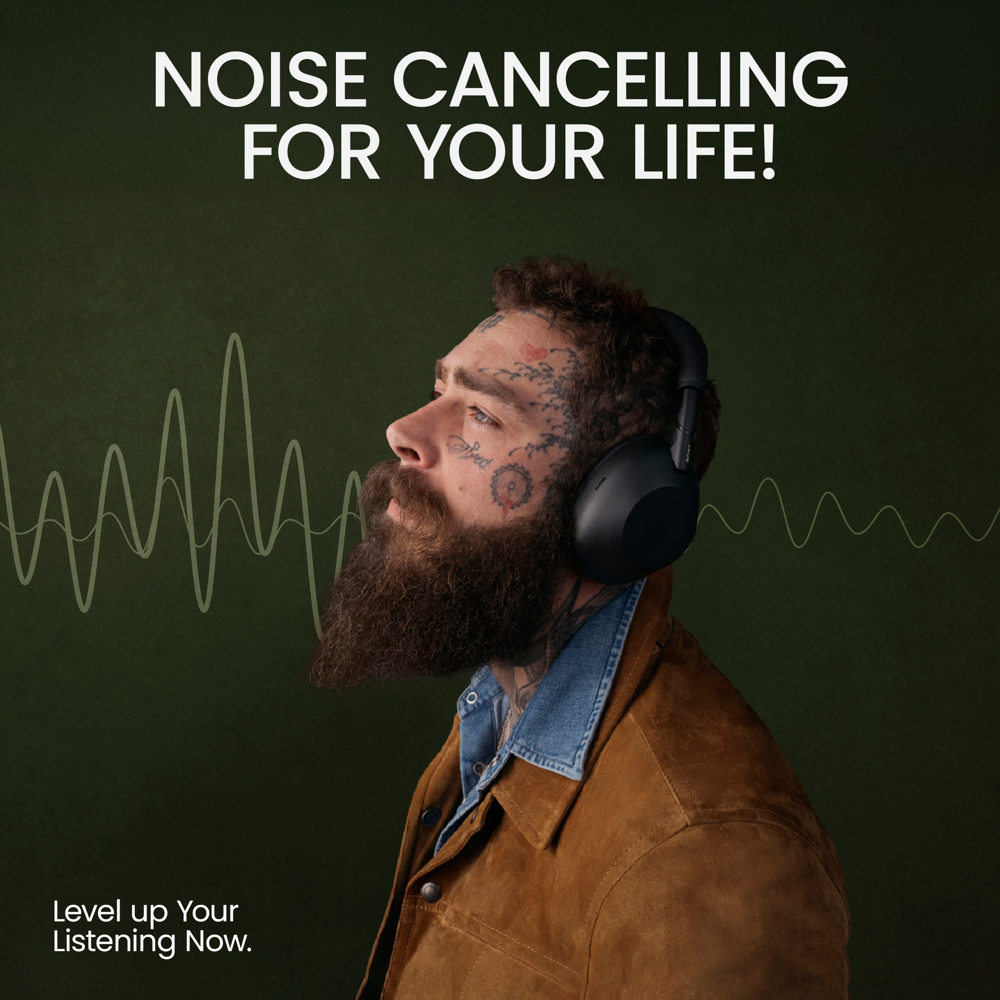
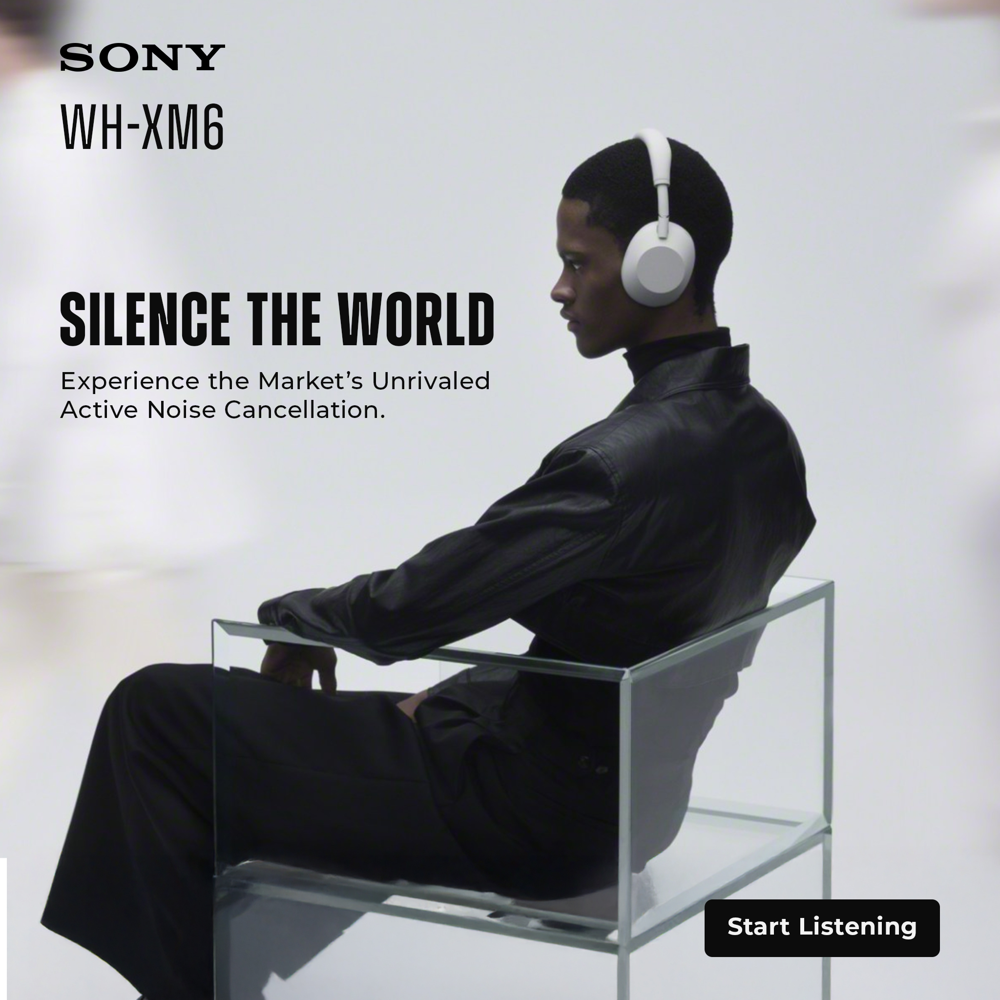
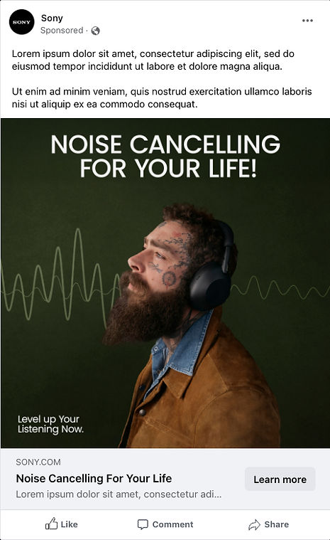

Sony: Noise Cancelling For Your Life!
Direct-response paid social creative designed to make an invisible audio benefit, active noise cancellation, instantly obvious in a crowded mobile feed.
You cannot play sound through a silent feed. The creative had to make viewers feel quiet isolation purely through visual composition.
A jagged frequency waveform that flattens into a calm horizon line as it touches the headphone cup, demonstrating silence at a glance.

Creative Anatomy
Deconstructing how contrasting waveforms, product lighting, and crisp benefit copy guide viewers toward checkout.
Lifestyle Headline Reframe
"Noise Cancelling For Your Life!" transforms a technical audio specification into an emotional lifestyle benefit that stops the scroll.
Visual Silence Metaphor
The waveform smoothly moves from chaotic noise to a flat line as it passes through the ear cup, giving users a clear picture of the audio benefit they cannot see.
Aspirational Action Driver
"Level up Your Listening Now." inspires urgency with an active prompt, removing hesitation and encouraging instant retail exploration.
A/B Concepting
Comparing technical spec callouts against commuter lifestyle framing to pinpoint what triggers the highest click-through rate.
Emotional Lifestyle Connection
Uses a relatable persona and a "visual silence" waveform to make an invisible technical benefit tangible. The copy frames noise cancellation as a vital life-improvement tool, not just a product spec.

Premium Minimalist Authority
Emphasizes luxury and tech superiority with a high-fashion, editorial aesthetic. The clean composition and direct copy focus on the exclusive, high-end experience of "silencing the world."
Context is King
The ad in its natural habitat, competing for attention in a fast-scrolling social feed.

Visual Silence Contrast
Bold green waveform and high-fashion portrait create instant focal contrast in busy social feeds.
Sub-Second Benefit Delivery
The before-and-after waveform demonstrates active noise cancellation in under 300 milliseconds.
Aspirational Brand Authority
Editorial lighting and crisp typography establish Sony premium credibility while driving direct response click-throughs.